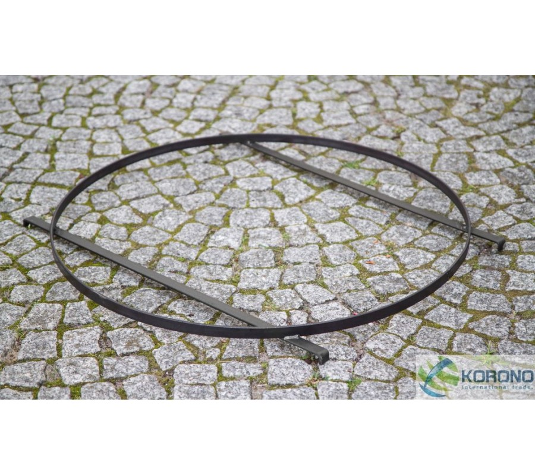

Welcome to keptuvės
▷ Keptuvės | Įranga restoranams
2020.10.29 08:40
Užsiregistruoti / Prisijungti 8 630 99009 I - V 09:00 - 18:00 0 prekių - 0.00€
Jūsų pirkinių krepšelis tuščias!
Kategorijos Maisto gamybos įranga Apranga maisto pramonei Atsarginės dalys / Priedai Daržovių apdirbimo įranga Griliai Įrangos nuoma Kebabinių įranga Kepyklų įranga Konvekcinės krosnys Maisto išdavimas / savitarna Maisto transportavimo konteineriai Makaronų gamybos įranga Mėsos apdirbimo įranga Nerūdijančio plieno gaminiai Paverčiamos keptuvės Picerijų įranga Prekybiniai, ekspoziciniai indai Smulki gamybinė įranga Vakuumatoriai Virimo katilai Viryklės Peržiūrėti visus Maisto gamybos įranga Indų plovimo įranga Konvejerinės indų plovimo mašinos Kupolinės indaplovės Padėklai indų plovimui Pobarinės indaplovės Priedai indų plovimui Priemonės indų plovimui Virtuvės indų ir inventoriaus plovimas Peržiūrėti visus Indų plovimo įranga Šaldymo įranga Baro šaldytuvai Dažyto plieno korpuso šaldytuvai/šaldikliai Impulsinio pirkimo šaldytuvai Ingredientų vitrinos Ledo generatoriai Ledų gamybos įranga Mėsos brandinimo spintos Mini baro šaldytuvai Nerūdijančio plieno korpuso šaldytuvai Prekybiniai šaldikliai Prekybiniai šaldytuvai Šaldikliai ledams Šaldomi stalai Šaldymo vitrinos Šaldytuvai vynui Šildomos vitrinos Smūginio užšaldymo įranga Sushi vitrinos Vyno šaldytuvai Peržiūrėti visus Šaldymo įranga Baro reikmenys Baldai banketams Baro blenderiai Baro inventorius Citrusinių vaisių sulčiaspaudės Dantų krapštukai Informaciniai ženkliukai Išorinė reklama ir reklaminės lentelės Kavamalės Kavos aparatai Kolbos alui Lauko inventorius Ledo generatoriai barams Maisto išdavimo inventorius Padavėjo padėklai Perkuliatoriai Poliravimo mašinos Peržiūrėti visus Baro reikmenys Virtuvės reikmenys Dubenys Galąstuvai GN indai Keptuvės Konditerijos reikmenys Peiliai Pjaustymo lentelės Puodai Šiukšliadėžės Smulkūs virtuvės reikmenys Svarstyklės Termometrai Peržiūrėti visus Virtuvės reikmenys Serviravimo reikmenys Stalo indai Stalo įrankiai Kita Indų nuoma Peržiūrėti visus Serviravimo reikmenys AKCIJOS Kontaktai Keptuvės Maisto gamybos įranga Indų plovimo įranga Šaldymo įranga Baro reikmenys Virtuvės reikmenys Serviravimo reikmenys Ketaus indai Sulčiaspaudės Vienkartiniai indai ir pakavimas PARDUOK NAUDOTĄKeptuvės
Elektrinės keptuvės
Gilios keptuvės
Keptuvės
Keptuvės dengtos neprisvylančia danga
Keptuvės lietiniams
Keptuvės Paela
Keptuvės žuviai
Ketaus keptuvės ir kepimo indai
Wok keptuvės
Profesionalų pamėgtos keptuvės
Gaminant maistą svarbu ne tik virėjo įgūdžiai, bet ir naudojamų reikmenų kokybė. Jei ieškote savo įstaigai tinkamiausios keptuvės, peržvelkite mūsų siūlomų kepimui skirtų reikmenų katalogą, o esant poreikiui - pasikonsultuokite ir patarimo paklauskite ĮRANGA RESTORANAMS komandos.
Siūlome daugybę variantų, iš kurių neabejotinai rasite tinkamiausią savo maitinimo įstaigos virtuvei. Pavyzdžiui,keptuves skirtas būtent lietiniams, skirtas tik žuviai, paella ar wok. Taip pat, elektrines keptuves, gilias keptuves, dengtas nesvylančia danga, pagamintas iš ketaus.
Elektrinės keptuvės
Pagrindinis šių profesionalių elektrinių keptuvių pliusas yra galimybė išlaikyti pastovią temperatūrą geriau nei bet kokio kito tipo keptuvės pagalba. Dėl šios priežasties,jūsų maistas iškeps tolygiai, o pastovi temperatūra bus itin naudinga ir gruzdinant. Šių keptuvių rankenėlės – termoizoliacinės, saugios ir patogios naudoti.
Gilios keptuvės
Visose ĮRANGA RESTORANAMS asortimente esančiose giliose keptuvėse dangai sutvirtinti naudojamos polimerų ar granito dalelės arba aliuminio lydinys. Gilios keptuvės su polimerų ar granito dalelėmis yra kur kas atsparesnės bei tvirtesnės už kitas neprilimpančias dangas, skirtas naudojimui namuose. Tvirtumui užtikrinti atliekami įbrėžimų, temperatūros bei nusidėvėjimo testai. Aliuminio lydinio bei titaninės dangos keptuvės taip pat nepridengančios, ypač greitai įkaista, todėl sutaupoma iki 30% energijos, o šiluma pasiskirsto tolygiai.
Universalios keptuvės
Asortimente rasite keptuvių teflono, aliuminio bei titano, plieninėmis dangomis. Siūlome keptuves , kurioms kepimo metu reikalingas vos lašelis aliejaus, kurių rankenos neįkaista, taip pat atsparias korozijai, itin lengvas, nesvylančias.
Keptuvės dengtos neprisvylančia danga
Nesvylančios dangos keptuvės dėka išvengsite papildomo vargo šveičiant pridegusius maisto likučius. Mūsų siūlomų nesvylančių keptuvių danga sudaryta iš 3 sluoksnių nepridegančio marmuro medžiagos. Nepridengančios dangos keptuvės yra itin atsparios aukštoms temperatūroms - iki 250 laipsnių, joms tereikia lašelio aliejaus puikiems kepimo rezultatams pasiekti, tad gaminamas maistas bus sveikesnis ir mažiau riebus.
Keptuvės lietiniams
Šios keptuvės yra pritaikytos būtent lietiniams – negilios, nereikia daug aliejaus, nepridegančios. Mūsų siūlomų keptuvių lietiniams pagalba jūsų įmonės virtuvės šefai iškepsite lengvus ir gardžius blynelius.
Paella keptuvės
Paella keptuvės pasižymi platėjančiais šonais, kadangi šis patiekalas yra laikomas tinkamai paruoštu tik tuomet, jei plonas ryžių sluoksnis užpildo visą dugną. ĮRANGA RESTORANAMS rasite įvairių matmenų, valciuoto plieno bei emaliuotas, būtent šiam patiekalui pritaikytas keptuves.
Keptuvės žuviai
Žuvies keptuvės yra gana plačios, tad galėsite kepti kelias žuvis vienu metu. Forma pritaikyta išskirtinai žuvies patiekalams. Taip pat greitai įkaistančios, nereikalaujančios daug aliejaus, nepridengančios.
Ketaus keptuvės ir kepimo indai
Lyginant su kitomis, ketaus keptuvės yra sunkesnės, tad, atitinkamai, jos gali stipriau įkaisti, ilgiau išlaikyti kaitrą. Tai ypač naudinga gaminant patiekalus, kurių kepimo laikas yra ilgas. būdinga stipriau įkaisti, o tai ypač naudinga gaminant daug laiko reikalaujančius patiekalus. Taip pat ketaus keptuvės išsiskiria ilgaamžiškumu – ją sulaužyti ar subraižyti būtų sudėtinga.
Ketaus keptuvėms reikalinga atidesnė priežiūra. Naudojant keptuvę pirmą kartą reikėtų išvalyti gamyklinį tepalą, tuomet ištepti aliejumi ir pašildyti ~180 laipsnių temperatūroje. Ataušus nuvalyti aliejuotu medžiagos gabalėliu. Aliejus užpildo ketaus keptuvės poras ir kurį laiką keptuvė tampa nepridegančia.
WOK keptuvės
Kiniškų patiekalų restoranai ar užkandinės negalėtų išsiversti be tokio tipo keptuvės. Siūlome šilumą tolygiai paskirstančias, nenusidėvinčias, pagamintas iš kokybiškų medžiagų wok patiekalams skirtas keptuves.
Sunku išsirinkti iš aibės įvairiausių keptuvių? Nežinote kuris variantas labiausiai tiktų jūsų įstaigos virtuvėje? Susisiekite su mumis, ĮRANGA RESTORANAMS pasirengusi įgyvendinti visas jūsų įstaigos virtuvės idėjas.
Parsisiųskite mūsų programėlę:
Informacija
Kontaktai Kaip užsisakyti Atsiskaitymas Pristatymas Garantijos Grąžinimas Apie mus HoReCa technologinis projektavimas Prekių ženklai Dovanų kuponai AKCIJOS TinklaraštisKategorijos
Maisto gamybos įranga Indų plovimo įranga Šaldymo įranga Baro reikmenys Serviravimui reikmenys Virtuvės reikmėnysPagal veiklą
Kebabinių įranga Кеpyklų įranga Picerijų įrangaKlientų aptarnavimas
Mano paskyra Užsakymų istorija Partnerystės programa Grąžinimo registracijaKontaktai
Telefonas: 8 630 99009 El. paštas: uzsakymai@irangarestoranams.ltRekvizitai
Horekos servisas, UAB Įmonės kodas: 304502590 PVM kodas: LT100010946013Adresas
Veiverių g. 153 Kaunas LT-46417